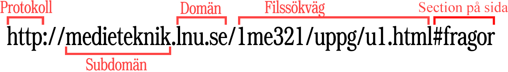

HTTP är ett kommunikationsprotocol som används för att överföra hemsidor som ligger på World Wide Web till en webbläsare. Det finns även en version som kallas HTTPS (Hypertext Transfer Protocol Secure) som är säkrare då den inte användarens förbindelse till hemssidan inte kan störass eller avlysssnas av en tredje part.
TCP (Transmission Control Protocol)
TCP/IP är ett protokoll som en dator använder för att kommunicera över nätverk
IP (Internet Protocol)
En dators IP är datorns adress på internet som används för att kunna skicka rätt information till rätt dator.

Element, tag och attribut
Element
Ett HTML element är de bitarna i ditt HTML dokument som har en opening tag i början och en closing tag i slutet (Som exempel <div> och </div>).
Tag
En tag är början och slutet på ett element och står alltid mellan < och > tecken.
Attribut
En attribut är som ett tilläg till en tag på det sättet att man kan lägga till en attribut som ger en tag olika egenskaper. Exempel på det är href="" attributen som används för att kunna länka elementet till hemsidor.
Element och dess attributer
<a>
href=""
download=""
ping=""
<img>
src=""
alt=""
height=""
<ol>
type=""
start=""
reversed
CSS
Vad är en regel i CSS?
En regel i CSS är en eller flera CSS egenskaper som kopplas till ett eller flera HTML element, klasser eller id.
Exempel på en css regel:
div{ height:10rem; width:20rem; }
Vad menas med kaskad i CSS?
Kaskad syftar på det att i CSS finns det regler för hur innehållet i din .css fil ska prioriteras.
Din css prioriteras på det här sättet: